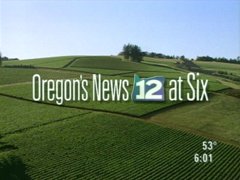
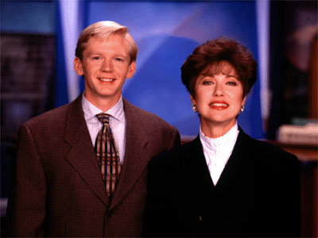
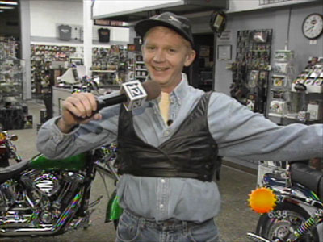

|
|
Oregon's News 12 at Six  Premiering the same day as "Good Day Oregon, "Oregon's News 12 at Six" was an hour-long newscast hosted by veteran Portland anchor, Kathy Smith. Also featured was Northwest newcomer Andy Carson, who provided weather and a little lighthearted humor at this early hour. The program was renamed in 1999, when Good Day Oregon expanded to four hours (5:00-9:00am). 

This page last updated on August 24, 2025 |


|
Yesterday's KPTV Website design and content ©2003-2025 by Ron Dunevant, LLC unless otherwise noted. |